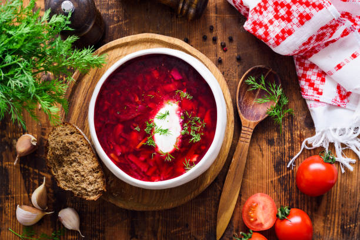

BORSHCH. Intangible Cultural Heritage of Ukraine

Description
Borshch (beetroot soup) is not just a traditional Ukrainian daily meal, it’s a symbol of unity – the basis of the culinary tradition of Ukraine, which is stronger than any modern experiments and overseas borrowings. Borsch is a dish with a national character. It is primarily associated with Ukraine. This “association” smells delicious and promises warmth, comfort, fullness, and, thus, sense of peace. When Ukrainians choose to cook borsch as their everyday main dish – their express their patriotism and show their love for Ukraine. source
Ingredients
- Red beets
- Cabbage
- Potatoes
- Carrots
- Onion
- Garlic
- Dill
- Tomato paste
- White vinegar and sugar
- Bay leaves
- Water or beef broth, vegetable broth or chicken broth
- Salt and pepper
How to Make Borshch
- Prep veggies: You want to start with cabbage first because it takes the longest time to cook. While it is cooking, you can prep other vegetables.
- Cook cabbage in broth with bay leaves and peppercorns for 20 minutes after bringing to a boil. Chop beets, potatoes, carrots and onion in the meanwhile.
- Saute onion and carrots in a bit of olive oil until translucent, about 5 minutes. This makes onion flavorful making entire borscht recipe more delicious. Do not skip.
- Then add beets and a bit more oil, cook for another 5 minutes.
- Transfer sauteed veggies to the pot along with potatoes, tomato paste and salt. Cook covered for 20 minutes. In the meantime, prep garlic, dill and other seasonings.
- Season borscht with white vinegar, garlic, sugar and pepper. You can also use red wine vinegar, apple cider vinegar, white wine vinegar or lemon juice. Traditional choice is white vinegar though.
- Stir, turn off heat and let borscht soup stand for 10 minutes covered to allow flavors to “marry” each other. Add dill and your borscht is ready to serve.
- Serve it warm, with a dollop of sour cream and sprinkle of fresh dill in bowl, slices of home cured pork belly (salo), pampushky or rye bread and fresh garlic on a side. But on a hot summer day, cold borscht is just as delicious.
- Sour cream or yogurt: Sour cream is traditional choice. We use plain yogurt with more than 2% fat because it is lighter than sour cream..
source